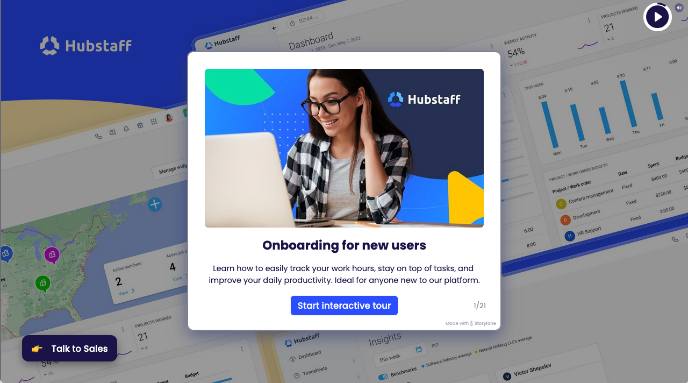

Let’s get you started with Hubstaff!
Install the desktop app and track time to a project
Start the timer on the desktop app to confirm your setup
We’ll let you know the moment we can see you tracking time.
- Download the app
- Press play to start the timer
Waiting to hear back from your desktop app…
No project detected for time tracking. An email was sent to your manager.
Need help, can’t track, or doesn’t apply?
Read the Quick Start guide
 Reach out to our support team
Reach out to our support team
How do I start tracking time?
Download the desktop app. Then select a project and track time and activity to that project.
Where can I see the time I tracked?
You can view your time and activity in Hubstaff’s web application.
Don’t have a project?
To track time in Hubstaff, you need to create or select a project first. Without a project, time tracking won’t be recorded properly.
